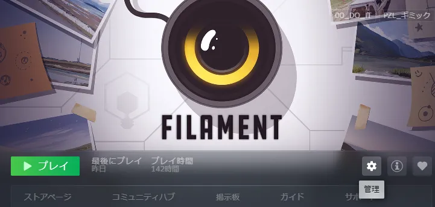
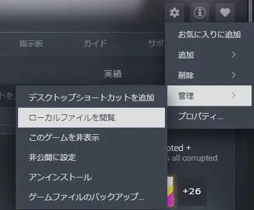
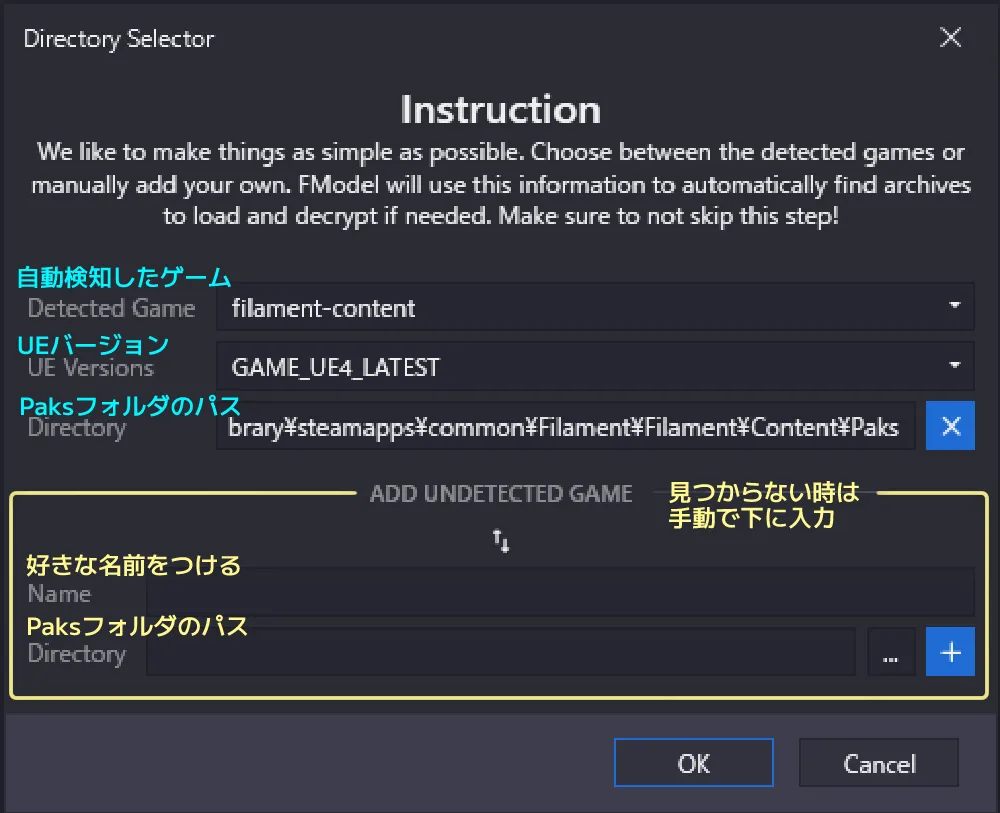
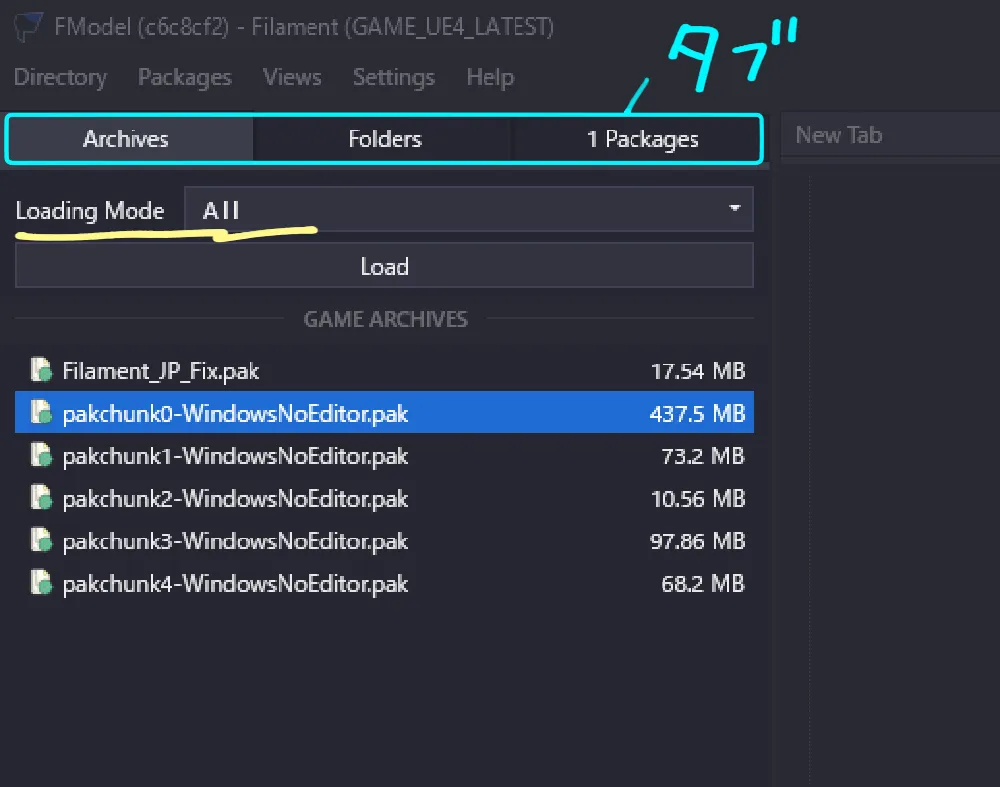
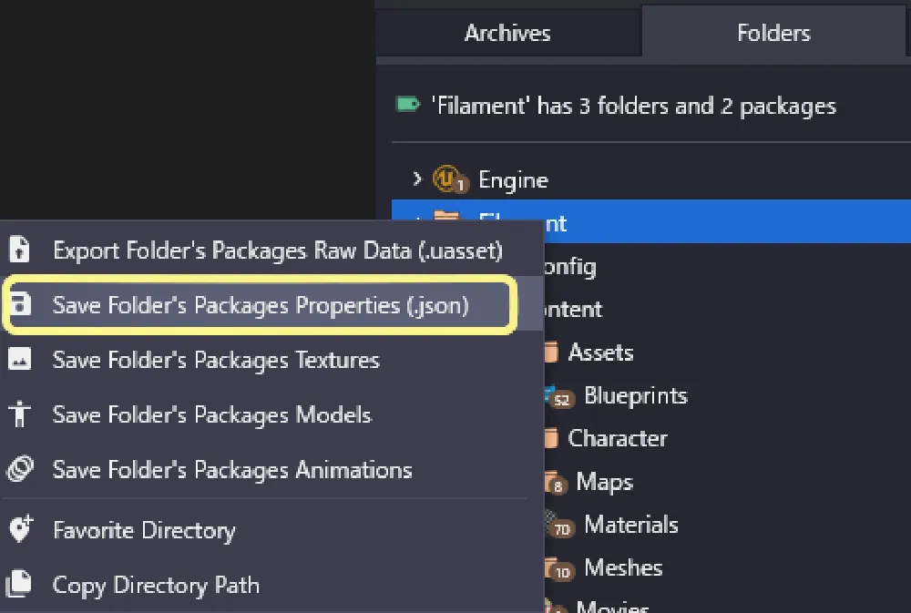
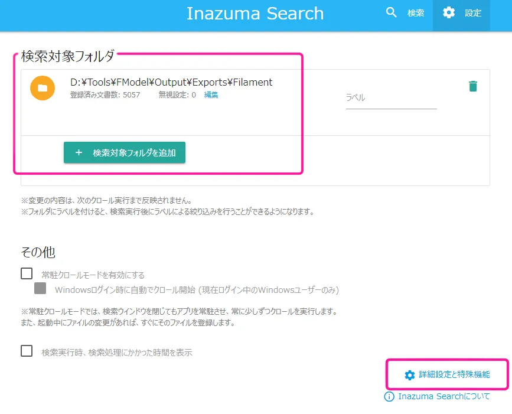
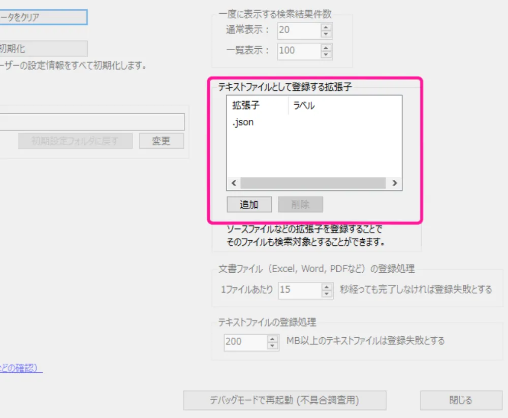
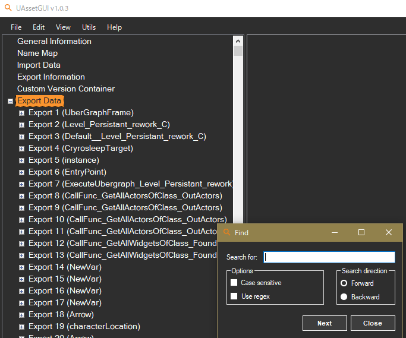

UE4ゲームの字幕テキストを
翻訳・修正する方法
（.locresなし）
翻訳・修正する方法
（.locresなし）
2026/03/10
『Filament』というUE4製ゲームの機械翻訳を、自然な日本語に修正したときの手順です。
有志翻訳Modderの参考になれば幸いです。ゲームの概要はこんな感じ：
- Unreal Engine 4.24 製
- ローカライズファイル（.locres）なし
- アセット（.uasset）に字幕テキストが組み込まれてる
作業の流れ
tips.
ゲームフォルダ はどこ？
何かと使うので、簡単にメモ。
-
Steamのライブラリ > 歯車マーク

-
管理 > ローカルファイルを閲覧

……で出てくるのが、ゲームフォルダ。
close
1
ゲームエンジンを調べよう
- Unreal Engine か、Unity か、はたまた別か？
- ゲームフォルダ からゲームの実行ファイル（.exe）を右クリックして、プロパティで調べた。UE 4.24だった。
close
2
.pak を探そう
- ゲーム内のコンテンツは、パッケージ・ファイル（.pak）にまとめられている。 ※ .ucas/.utoc の場合あり
-
ゲームフォルダ 直下か、「ゲーム名/Content/」から Paks フォルダを探そう。
ここに .pak が入っている。 -
.pak はそのままじゃ開けない。
容量もデカいので、まずは中身を見るツールで、ゲーム内テキストや翻訳がどのファイルに入ってるか探す。
今回は FModel を使った。
を使った。📌 FModelでできること …… .pak (.ucas/.utoc) の中を見る、ファイル名検索、.json出力、.uasset出力
close
3
.pak の中を見てみる ／ツール - FModel
-
FModel を起動すると、ゲームを自動検知してくれる。
見つからない時は手動入力。適当な設定名をつけて、Paks フォルダのパスを入れる。
-
Paks フォルダの中身の画面になる。
- Archives タブ > Loading Mode > All にする。
- Loadボタンを押すと、.pak が全部読み込まれる。

📌 Loading Mode
- Multiple : 選択した .pak だけ読み込む（複数可）
- All : 全部読み込む -
Folders タブへ。
- ここが .pak の中身。フォルダ・ファイルが一覧になって出てくる。
-
ゲーム名 のフォルダ（ルートフォルダ）を選んで、検索 Ctrl + Shift + P をかけてみよう。
- 今回は公式訳があるゲームなので、.locres（ローカライズの翻訳ファイル）を探した。→ 無し
- local log message text jp など字幕に関係しそうなファイル名で探す。→ .uassetがいくつかヒット
- 検索結果からファイルサイズ 800kb-1Mb あたりのものを内容確認したが、肝心なメインストーリーのテキストが見つからない。→ 全文検索へ
-
.locres がある場合は、こちらが参考になりそう： 翻訳Modderの為の忘備録 - Yararezon
close
4
全文検索したい ／ツール - Inazuma Search
- FModel の検索で、ゲームテキストがいくつかのファイルに分かれてるとわかった。
ファイル名検索だけじゃ探しきれない。 - 今のところ、FModel は全文検索ができない。
.pak を全部 JSON で取り出して、テキスト用の全文検索ツールで探すことにした。今回は Inazuma Search を使う。
FModel で JSON出力
-
まずは FModel。
上部メニュー Setting > General > Output Directory で出力先を決めておこう。 -
ゲーム名 のフォルダ（ルートフォルダ）を右クリック > （.json）で出力。

Inazuma Search で全文検索
-
つぎに Inazuma Search を起動。
- 右上の設定 > 検索対象フォルダを追加する。出力したJSONが入ったフォルダだ。
- そのまま、右下にある「詳細設定と特殊機能」へ進む。

-
ここで.jsonを追加すると、JSONファイルの全文検索ができるようになる。

-
あとは最初の画面に戻って、クロールボタンを押し、しばらく待つ。
クロールが終わったら、ゲーム内の固有名詞・セリフなどで検索。ゲーム内テキストが入ったファイルを全部特定する。 特定したファイル名とパスはメモっておく。
今回のゲームは、メインストーリーのテキストが3つのファイルに入っていて（.uasset、.umap）、どれが実際にゲーム内に影響を与えてるのか確認しないといけなかった。
【6 .uasset編集】で「これは」「これハ」「これワ」とわざと変えて保存し、ゲーム内でその文章を確認して突き止めた。
close
5
.pak から .uasset を取り出そう
FModel に戻る。
さっき突き止めたファイル名で検索。ヒットしたファイルを右クリック > （.uasset）で出力。
📌 場合によっては .uasset と .uexp がセットなこともある（.uasset がヘッダー、.uexp が実データ）。
その場合は一緒に出力してくれるらしい。UAssetGUI での編集や .pak化するときも、セットで入れる必要がある。
📌 今回は、メインストーリーのファイルだけ.umapだった。
でも .uasset と同じように扱っていいみたい。出力も編集も同じ方法でできた。
close
やっと翻訳作業だ。私の手順はこんな感じ：
- 英語原文をコピー
- AI／機械翻訳をかける
- 都度細かいニュアンスを深掘り、修正
- 修正した訳をオリジナルと置き換える
1と4に、UAssetGUI を使った。
を使った。

UEバージョンをちゃんと入れさえすれば、あとは .uasset ファイルを開くだけ。
左のリストの Export 1, 2, ....にデータが色々入ってるので、まず目当ての場所を探す。見つかったらコピーなり置換なりして、保存。
データが多い時は検索も使うとよし（結構時間かかるけど）。
close
使用ツール
- FModel -- .pakの中身を見る・タイトル検索・.jsonで抽出
- Inazuma Search -- .jsonで抽出したテキストを全文検索
- UAssetGUI -- .uasset ファイルのテキストを書き換え
- UE_4.24 (UnrealPak) -- .pak にパッキング